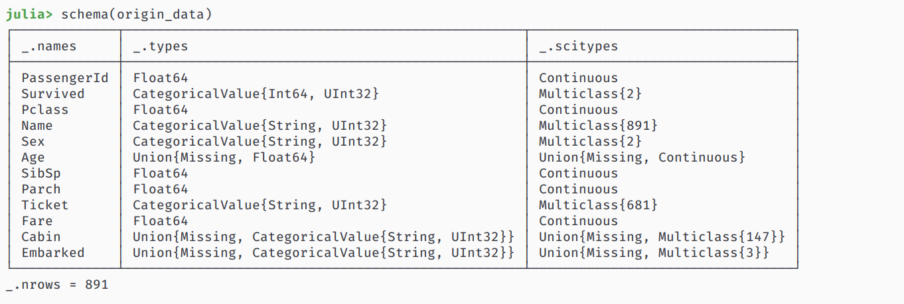
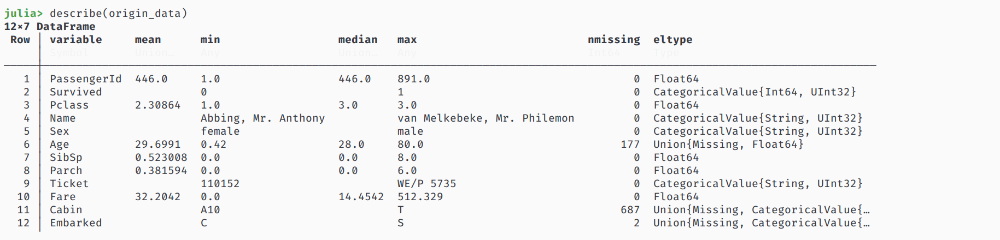
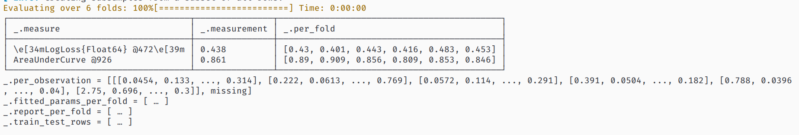
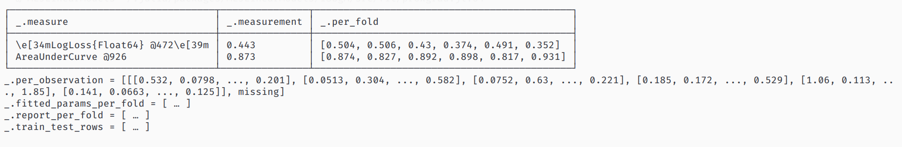
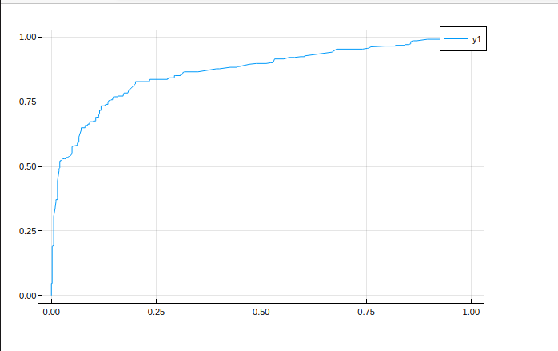

项目介绍
先导入必要的库
using MLJ, DataFrames, StableRNGs, CSV, Plots
plotly()
还要从 Kaggle 上下载好数据集 train.csv 与 test.csv ，并用 CSV 加载
origin_data = CSV.read("data/train.csv", DataFrame)
到提交的时候，数据表中的字段 PassengerId(Integer) 与 Survived(Integer)
数据探索
字段含义
我从网上查到这些字段的含义，有些字段的类型虽然是 Float ，但也是 1.0, 2.0之类的，比如 Age
| 字段名称 | 字段含义 字段类型 | |
| PassengerId | 乘客ID | Int |
| Survived | 是否存活 Int | |
| Pclass | 乘客等级(1/2/3等舱位) Int | |
| Name | 乘客姓名 | String |
| Sex | 性别 | String |
| Age | 年龄 | Float |
| SibSp | 堂兄弟/妹个数 Float | |
| Parch | 父母与小孩个数 Float | |
| Ticket | 船票信息 | String |
| Fare | 票价 | Float |
| Cabin | 客舱 | String |
| Embarked | 登船港口 | String |
字段科学类型
这个数据集使用分类预测，先要统一好各个字段的科学类型，不然一些 model 对字段不起作用
这里需要每个输入的数据类型是 Continuous, 而输出类型为 Multiclass
使用 schema 查看情况
schema(origin_data)

描述数据
看看这个数据有多少缺斤少两的
describe(origin_data)

数据处理
探索完数据后，接下来可以
填充缺失的数据
扔掉不用的数据
生成新的字段，或者优化数据
对 train.csv 的数据处理策略
从 train.csv 加载的数据中，我们发现
Age 字段有缺失的数据，我们用众数填充
Embarked 字段有缺失的数据，同上
Cabin 字段缺失值太多，丢掉
我觉得 PassengerId, Name, Ticket 不会影响，丢掉
我们打算对票价 Fare 字段进行一些处理，大部分数据都是小数，数值之间相差太大，对其用函数
f(x) = log(x + 1)
进行划分，划分的结果为 1.0, 2.0, 3.0, 4.0, 5.0
另外对一些特征进行整合，比如
生成新字段 FeatureA: 将
age < 12或sex == "female"的乘客化为 A 类，其余为 B 类统计自己以及家人数量，将 SibSp 与 Parch 字段相加后，再加上自身的数量1
将 Embarked, FeatureA 字段进行 Onehot 编码
当然，新特征代替旧特征，旧特征可以丢弃了
不过在处理数据前，先把各个字段的科学类型转换好
typeTransformModel(dataframe::DataFrame) = begin
if in("Survived", names(dataframe))
coerce!(dataframe, :Survived => Multiclass)
end
coerce!(dataframe, Count => Continuous)
coerce!(dataframe, Textual => Multiclass)
return dataframe
end
接下来定义数据处理模型
填充缺失值
fillMissingModel = FillImputer(features=[:Age, :Embarked], continuous_fill = e -> skipmissing(e) |> mode, finite_fill = e -> skipmissing(e) |> mode)
生成新的特征
newFeatureModel!(dataframe::DataFrame) = begin
# MODULE FeatureA 聚集 Age, Sex --> 12岁以下儿童以及妇女，12岁以上男性
feature_filter_a(age, sex) = age >= 12 && sex == "male" ? "A" : "B"
dataframe[!, :FeatureA] = map(feature_filter_a, dataframe[!, :Age], dataframe[!, :Sex])
# MODULE FeatureB 聚集 SibSp, Parch ---> 家庭人员数量
family_size(number) = begin
if number == 1
return 0
elseif number >= 2 && number <= 4
return 1
else
return 2
end
end
dataframe[!, :FeatureB] = map(family_size, dataframe[!, :Parch] .+ dataframe[!, :SibSp] .+ 1)
# MODULE FeatureC log(Fare + 1), encode(Pclass) -> 1, 2, 3
dataframe[!, :Fare] = map(floor, log.(dataframe[!, :Fare] .+ 1))
# TODO don't forget to coerce scitype
coerce!(dataframe, :FeatureA => Multiclass, :FeatureB => Continuous)
return dataframe
end
对 Embarked 进行 OneHot 编码
encodeModel = OneHotEncoder(features=[:Embarked, :FeatureA])
丢弃不用的特征
dropUnusedModel = FeatureSelector(features = [:Age, :Sex, :SibSp, :Parch, :Cabin, :PassengerId, :Name, :Ticket], ignore=true)
对 test.csv 的数据处理策略
从 test.csv 加载的数据与 train.csv 有点不同
缺失值有 Age, Fare，没有 Embarked
没有 Survived 字段
我们只需要重新为其定义填充缺失值的模型即可
fillMissingModel = FillImputer(features=[:Age, :Fare], continuous_fill = e -> skipmissing(e) |> mode)
数据处理模型
将各个模型串联起来，即可获得模型
transformModel = @pipeline typeTransformModel fillMissingModel newFeatureModel! encodeModel dropUnusedModel
transformMachine = machine(transformModel, origin_data)
接下来拟合 transformMachine ，转换原始数据得到 output_data
fit!(transformMachine)
output_data = MLJ.transform(transformMachine, origin_data)
查看以下数据是否符合我们的预期
schema(output_data)

对 test.csv 的数据转换需要重新定义 fillMissingModel
origin_sample = CSV.read("data/test.csv", DataFrame)
# generic typeTransformModel, ignore
fillMissingModel = FillImputer(features=[:Age, :Fare], continuous_fill = e -> skipmissing(e) |> mode)
# generic new feature generate
# generic encode model
# generic drop unused
transformSampleModel = transformModel = @pipeline typeTransformModel fillMissingModel newFeatureModel! encodeModel dropUnusedModel
transformSampleMachine = machine(transformSampleModel, origin_sample)
fit!(transformSampleMachine)
output_sample = MLJ.transform(transformSampleMachine, origin_sample)
TODO 数据相关性
其实还可以看看各个字段间的相关性，画个热力图就行了，问了以下 Slack 的人，发现在 StatsPlots 中已经有函数 corrplot
相关文档在这
但是吧这个图像好像不是热力图，我还是先放着吧
模型训练
引入模型
这是个分类问题，我打算使用 LogisticClassifier ，其他分类器也可以
从 MLJLinearModels 中导入模型
using MLJLinearModels
@load LogisticClassifier pkg=MLJLinearModels
clf = LogisticClassifier()
依据文档，其中的参数为
penalty (Symbol or String): the penalty to use, either :l2, :l1, :en (elastic net) or :none. (Default: :l2)lambda (Real): strength of the regulariser if penalty is :l2 or :l1. Strength of the L2 regulariser if penalty is :en.gamma (Real): strength of the L1 regulariser if penalty is :en.fit_intercept (Bool): whether to fit an intercept (Default: true)penalize_intercept (Bool): whether to penalize intercept (Default: false)solver (Solver): type of solver to use, default if nothing.
拆解数据
先把特征字段和预测结果分开
Y, X = unpack(output_data, colname -> colname == :Survived, colname -> true)
再定义训练集和测试集的行数
rng = StableRNG(1234)
train_row, test_row = partition(eachindex(Y), 0.7, rng=rng)
模型训练与调试
如果不需要调试模型的话，直接输入以下代码查看模型的训练情况
mach = machine(clf, X, Y)
fit!(mach, rows=train_row)
cv = CV(nfolds=6, rng=rng)
evaluate!(mach, rows=test_row,
measures=[cross_entropy, auc], resampling=cv)

对结果不满意的话，让我们来优化这个模型的参数，这里的优化策略使用 Grid，其中有三个维度
range of lambda
range of penalty
range of gamma
他们的定义是
r_lambda = range(clf, :lambda, lower = 0.01, upper = 10.0, scale = :linear)
r_penalty = range(clf, :penalty, values = [:l1, :l2])
r_gamma = range(clf, :gamma, lower = 0, upper = 10.0, scale = :linear)
由于 penalty 不是连续的，设置范围的时候可以手动设置他的值
设置好调优策略后，就可以新建一个自调优模型 self_tuning_model 来进行训练了
tuning = Grid(resolution = 5, rng = rng)
self_tuning_model = TunedModel(model = clf,
range = [r_lambda, r_penalty, r_gamma],
tuning = tuning,
resampling = CV(nfolds = 6, rng = rng),
measure = cross_entropy
)
self_tuning_mach = machine(self_tuning_model, X, Y)
fit!(self_tuning_mach, rows=train_row, verbosity=0)
调试完毕后，获取最优模型并评估
best_model = fitted_params(self_tuning_mach).best_model
best_mach = machine(best_model, X, Y)
evaluate!(best_mach,
resampling = CV(nfolds = 6, rng = rng),
measure = [cross_entropy, area_under_curve], verbosity = 0
)
看看训练结果

好像没多少变化，那看看 roc 曲线

投入使用
MLJ为分类结果定义了两种情况，一种是概率的，一种是二分的，而 LogisticClassifier 输出的结果是概率的
生成数据的最后还需要处理一遍
加载数据
origin_sample = CSV.read("data/test.csv", DataFrame)
处理数据
当然别忘了重新定义 fillMissingModel
fillMissingModel = FillImputer(features=[:Age, :Fare], continuous_fill = e -> skipmissing(e) |> mode)
transformSampleModel = transformModel = @pipeline typeTransformModel fillMissingModel newFeatureModel! encodeModel dropUnusedModel
transformSampleMachine = machine(transformSampleModel, origin_sample)
fit!(transformSampleMachine)
output_sample = MLJ.transform(transformSampleMachine, origin_sample)
生成预测结果
output_predict = mode.(predict(best_mach, output_sample)) |> nums -> convert(Vector{Int}, nums)
output_frame = DataFrame()
output_frame[!, :PassengerId] = convert(Vector{Int}, origin_sample[!, :PassengerId])
output_frame[!, :Survived] = output_predict
CSV.write("data/predict.csv", output_frame)
其中调用mode(d::UnivariateDistribution)，mode 返回概率最大的数，在这里只有对0与1的概率
上传数据
将 predict.csv 上传至 https://www.kaggle.com/c/titanic/submit